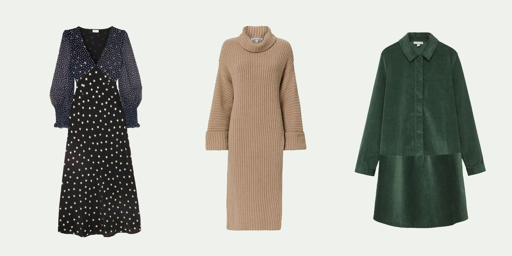
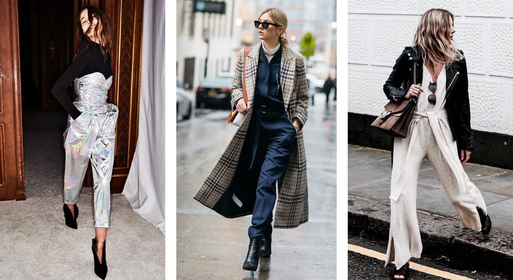
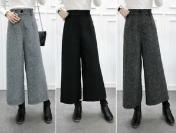
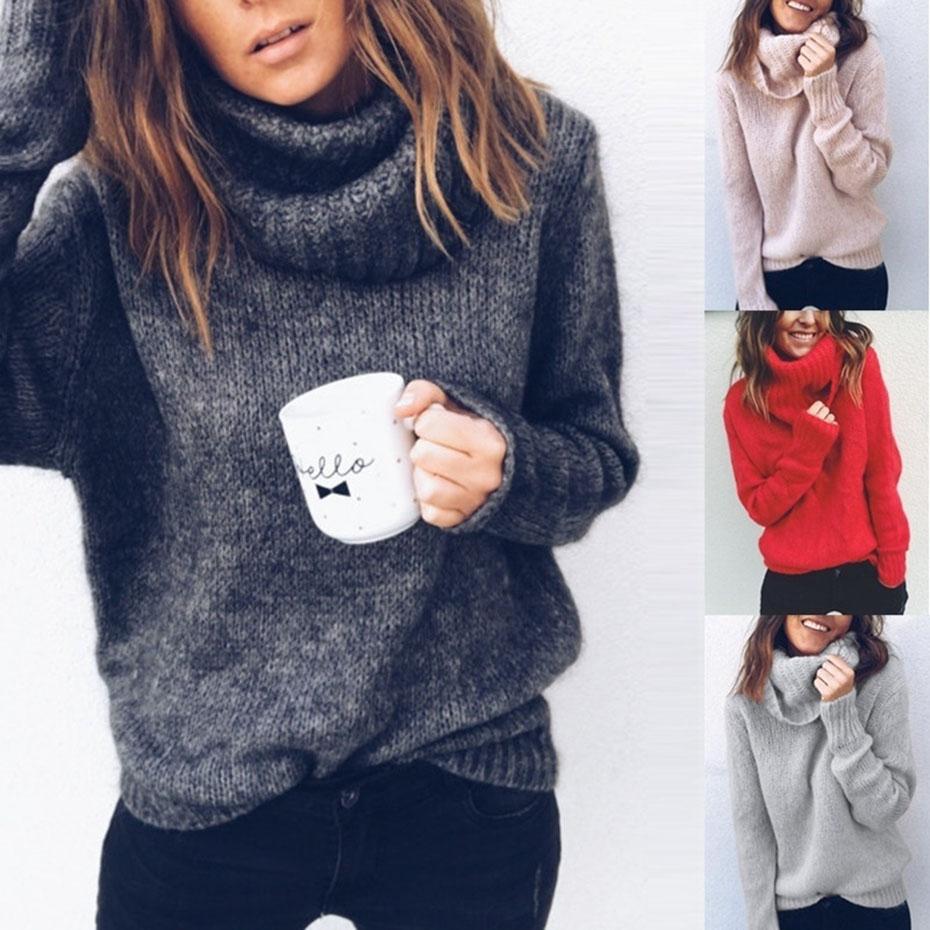
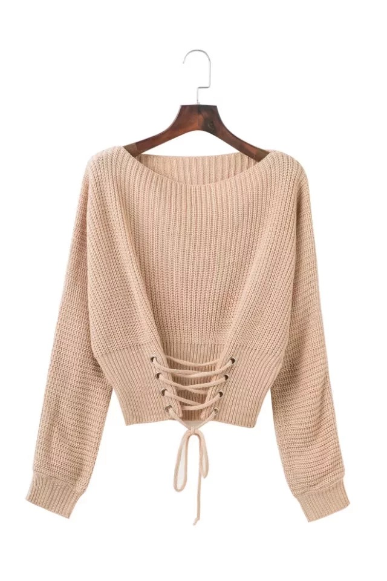

Home Summer Winter Fall Spring About Me!
Welcome to Winter!
Walking in a Winter wonderland! Hello! Welcome to the coziest time of year, where we all want nothing but to sit by the fire and drink hot cocoa. Well, who knew you could be cozy AND cute at the same time! Simply scroll down to see how you can style the snowy times!
Dresses
Here in the dress section we want something cozy'n'cute that you can just throw on under your coat to look stylish and stay warm. I recommend along sleeve maxi dress, that enhances your figure and is super trendy. Another GREAt style is a trench coat dress, which gives you a mysterious and edgy look.
Dresses For Winter
Jumpsuits/Rompers
Welcome to my favorite section! I love jumpsuits and rompers because they are a great summer statement, and super easy wardrobe choices. You don't have to worry about matching a top and pant with this one! For winter, however I don't recommend rompers because you will freeze! Anything long sleeve will work

Bottoms
So in pants, you want to wear a lot of thermal wear, and NO skirts or shorts. A long pencil skirt could work. < /p> 
Tops
Ah! here we have the most important piece:tops! Lemme tell you, they have even more varieties then dresses! Long sleeves are KEY. periodt. Wear a lot of black since it absorbs heat. Turtle necks and fleece keep you super warm.
 Shoes
Finally, SHOES the statement piece of all outfits. You honestly can't go wrong with these! I like a good fur-lined boot, or some good old sneakers. Man, there are so many options! With shoes, you honestly can do whatever you want.